编译安装PosgreSQL和PostGIS
这篇文章主要记录在ubuntu server下编译安装postgresql9.3和postgis2.1
下载PostgreSQL
下载源码
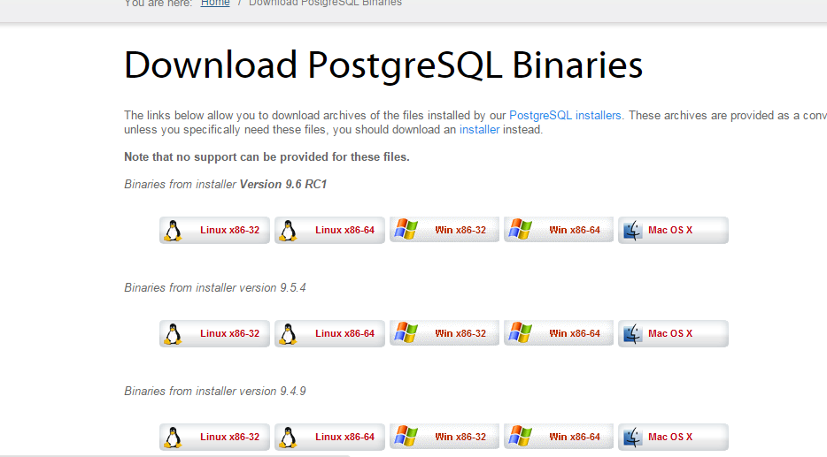
我下载9.3版本的
编译安装PostgreSQL
|
|
在安装过程中可能或出现make(build-essential) gcc c++ readline zlib等包的缺失
安装 build-essential
|
|
安装 g++
|
|
安装gcc
sudo apt-get install gcc-4.8
下面是安装zlib和readline的
虽然可以加上 “–without-readline” 即./configure --prefix=/usr/local/pgsql --without-readline 从而避开这个ERROR，
但Postgresql官方不推荐这么做，所以还是安装吧。
|
|
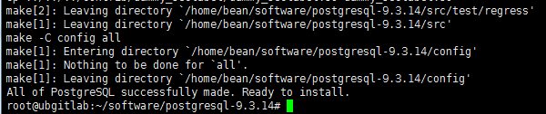
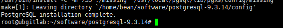
PostgreSQL9.3 安装完成
安装完成后配置
PostgreSQL 不能以 root 用户运行，所以我们
创建 postgres 用户
|
|
一般执行adduser之后会自动让你输入密码和一些信息
创建postgresql 数据目录：
mkdir /usr/local/pgsql/9.1/data/ 为啥不用mkdir /usr/local/pgsql/9.1/data/是为了防止以后安装了不同版本的pg
chown postgres /usr/local/pgsql/9.1/data或 chown postgres:postgres /usr/local/pgsql/data
ls -ld /usr/local/pgsql/data
会出现如下界面
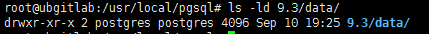
初始化postgresql数据目录
su postgres切换到postgres用户
/usr/local/pgsql/bin/initdb -D /usr/local/pgsql/9.3/data/
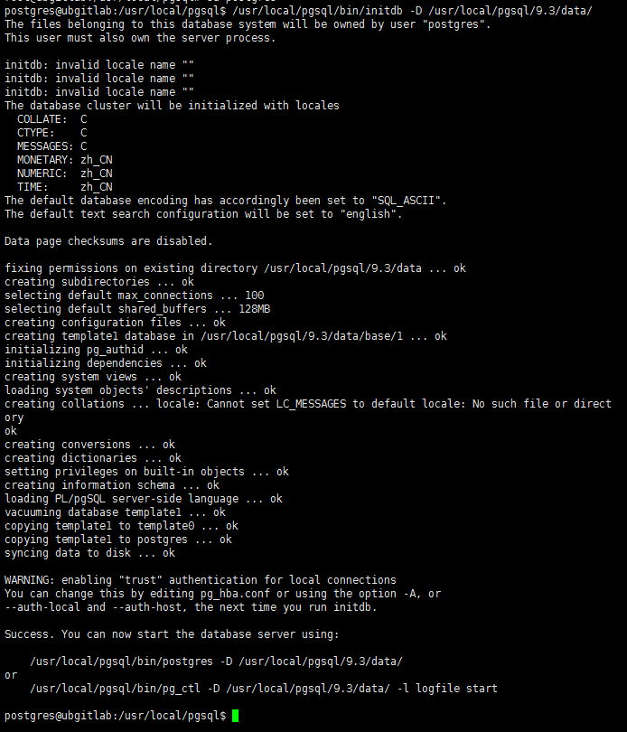
验证postgresql数据目录
ls -l /usr/local/pgsql/data
出现如下界面：
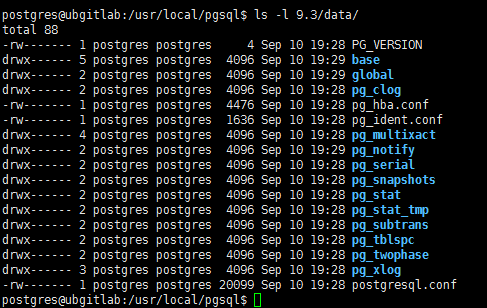
启动pgsql数据库
|
|
出现如下界面：
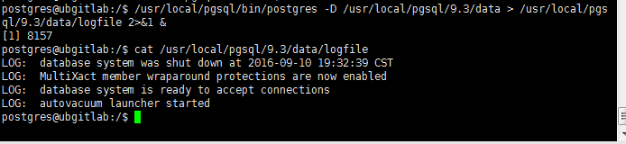
创建测试数据库
/usr/local/pgsql/bin/createdb test
进入test数据库
/usr/local/pgsql/bin/psql test
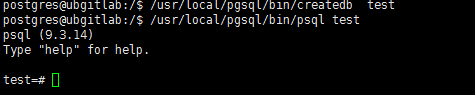
输入建表语句：
CREATE TABLE mytable (id VARCHAR(20), name VARCHAR(30));
建立完成后，会得到一条 “CREATED” 的信息，表示建立成功。
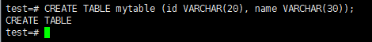
现在插入一条数据：
INSERT INTO mytable VALUES('author', 'rico');
psql 返回类似 INSERT 0 1
查询插入是否成功：
SELECT * FROM mytable;
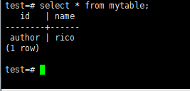
退出 psql :
\q
如何关闭 PostgreSQL
切换到 postgres 用户
su - postgres
关闭 PostgreSQL
/usr/local/pgsql/bin/pg_ctl stop -D /usr/local/pgsql/9.3/data
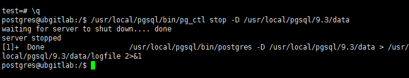
当然 你还可以查看下日志logfile
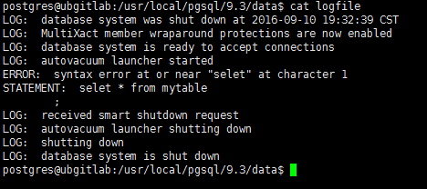
退出 postgres 用户
exit
参考 http://blog.csdn.net/longshengguoji/article/details/38468449
http://blog.csdn.net/leonzhouwei/article/details/7934810
安装 pgAdmin
注意，有桌面才装pgadmin，只有命令行模式不要安装pgadmin
pgAdmin主页 上有pgAdmin3和4
我这里安装pgAdmin3 的1.22版本
下载
1 安装必要的库
|
|
2 如果 /usr/lib 下有 libcrypto.so
|
|
3 切换到你的 pgAdmin3 解压后的目录后编译安装 pgAdmin3
|
|
./configure执行完成之后可能会报错
configure: error: could not find a suitable C++ compiler to build pgAdmin
解决办法：
执行 sudo apt-get install -y build-essential //是为了 install g++ compiler
然后就可以make了
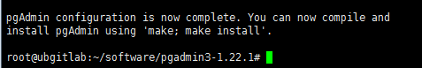
编译很慢，耐心等待
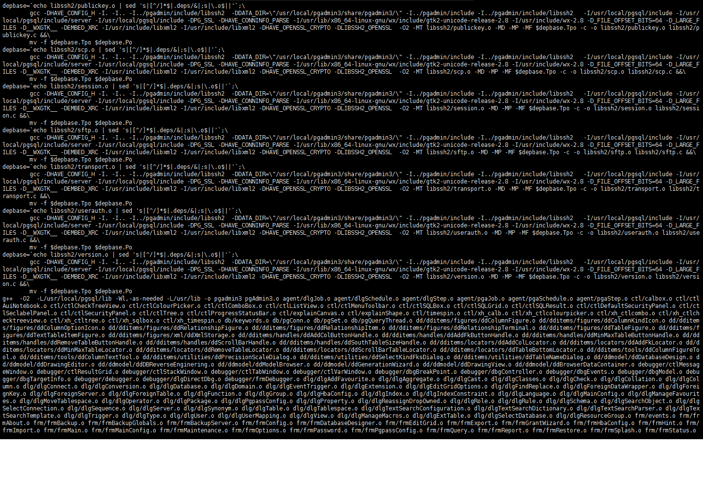
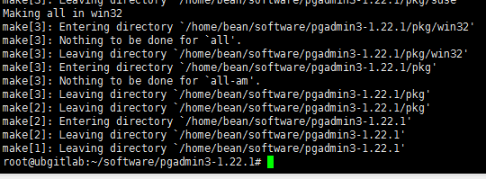
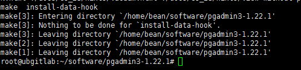
运行 pgAdmin3
下载PostGIS
我这里下载2.1版本的
打开PostGIS的源码网站 下载2.1的源码
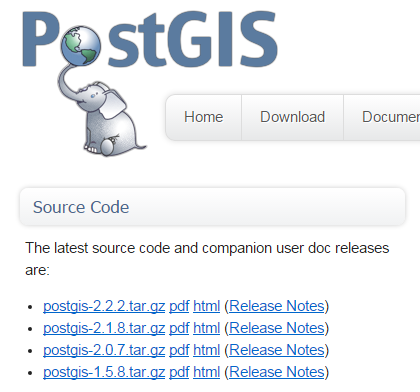
安装postgis之前还需要安装 GEOS, Proj.4, GDAL, LibXML2 和 JSON-C 这几个库
虽然这三个库不是安装postgis强制的，但是，没有这三个包，
postgis一定程度上失去了空间数据库的意义。因为Proj4提供了投影的相关操作，如postgis中的transform()函数，geos则为postgis提供了很多拓扑
检查功能的函数，如Touches(), Contains(), Disjoint() 还有一些空间操作函数，如Intersection(), Union() 以及 Buffer()等 ，而Libxml2则提供了对GML和KML的操作函数，如ST_GeomFromGML(), ST_GeomFromKML()等,如果丧失了这样特性，空间数据库将会怎样！
GEOS
官网 https://trac.osgeo.org/geos 下载源码包
编译安装
|
|
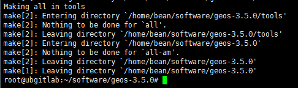
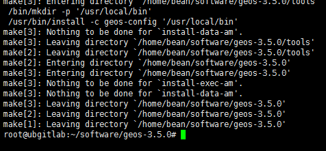
参考 https://trac.osgeo.org/geos/wiki/BuildingOnUnixWithCMake
Proj.4
https://github.com/OSGeo/proj.4
https://github.com/OSGeo/proj.4/wiki
|
|
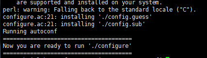
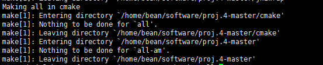
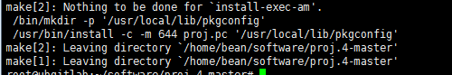
GDAL
gdal官网 http://www.gdal.org/
GDAL 下载 https://trac.osgeo.org/gdal/wiki/DownloadingGdalBinaries
https://trac.osgeo.org/gdal/wiki/DownloadSource
编译指南 macos linux unix windows等
https://trac.osgeo.org/gdal/wiki/BuildHints
https://trac.osgeo.org/gdal/wiki/BuildingOnUnix
|
|
LibXML2
Libxml2是个C语言的XML程式库，能简单方便的提供对XML文件的各种操作，并且支持XPATH查询，及部分的支持XSLT转换等功能。Libxml2的下载地址是
http://xmlsoft.org/
源码包列表 ftp://xmlsoft.org/libxml2/
我这里下载了libxml2-2.9.4.tar.gz
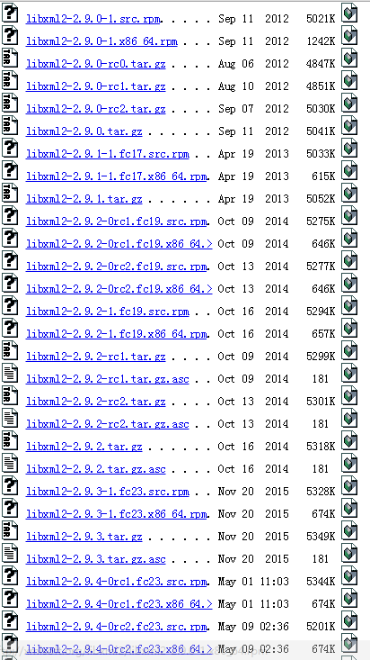
它的git地址 https://git.gnome.org/browse/libxml2/
|
|
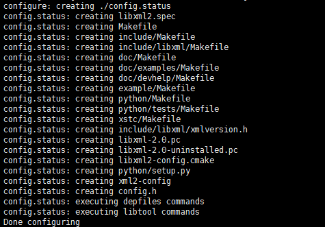
然而make过程中报错 了
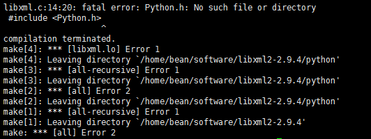
报错说没有python 那就安装python
apt-get install python-dev
然后就make成功了
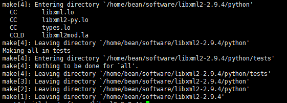
再继续make install
参考 http://www.cnblogs.com/shanzhizi/archive/2012/07/09/2583739.html
JSON-C
json-c github https://github.com/json-c/json-c
https://github.com/json-c/json-c/releases
下载解压
直接./configure然后make会报这个错
error: variable ‘size’ set but not used [-Werror=unused-but-set-variable]
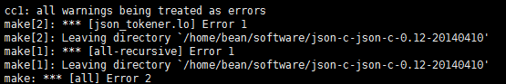
所以找到对应目录中的Makefile文件，找到 -Werror 字段，去掉-Werror，重新编译，则问题解决!
|
|
编译安装PostGIS
以上环境都准备好了，开始安装PostGIS
|
|
./configure之后的截图
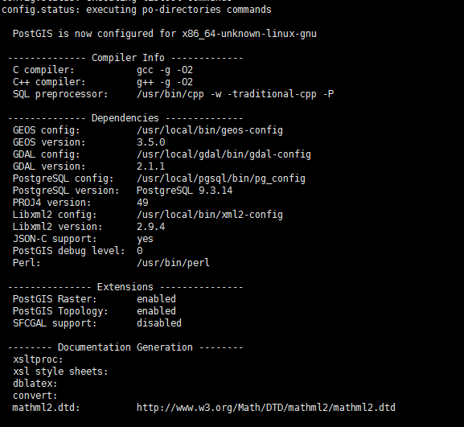
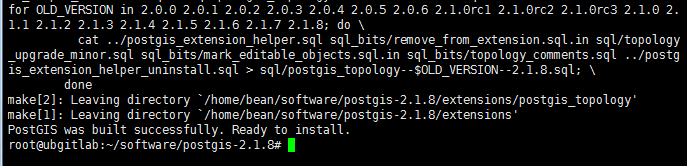
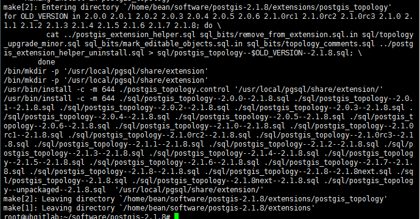
参考 http://blog.csdn.net/zuiaikg703/article/details/46776095
http://www.linuxfromscratch.org/blfs/view/svn/general/json-c.html
测试安装是否正确—–创建空间数据库。
熟悉windows环境下postgis的朋友，都会注意到，安装了postgis后，pgsql中多了一个数据库template_postgis，这是个空间数据库的模板，其实就是个空间数据库。
而在linux环境下通过源码安装的postgis，默认没有创建这个空间数据库，下面我就用创建者个模板空间数据库来验证上面的安装是否正确。
一旦创建了一个空间数据库模板，以后每次创建空间数据库只要在这个模板空间数据库上创建就可以了，省时省力！
|
|
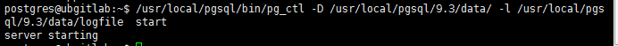
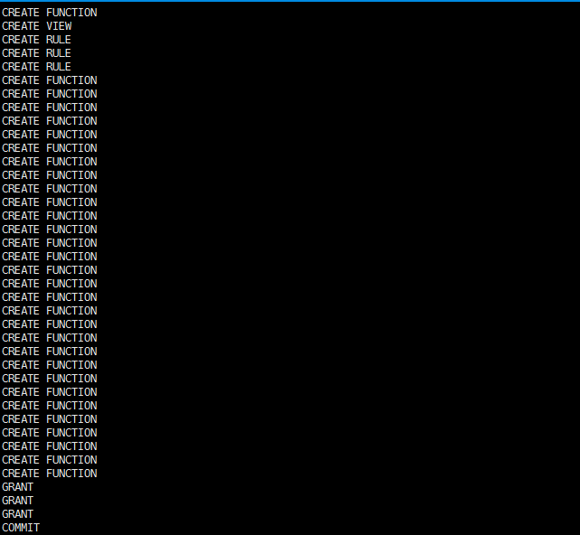
执行postgis.sql脚本，创建相关空间数据库相关的函数，类型，操作符等
执行完这个脚本，该数据库就具有了空间特性了
|
|
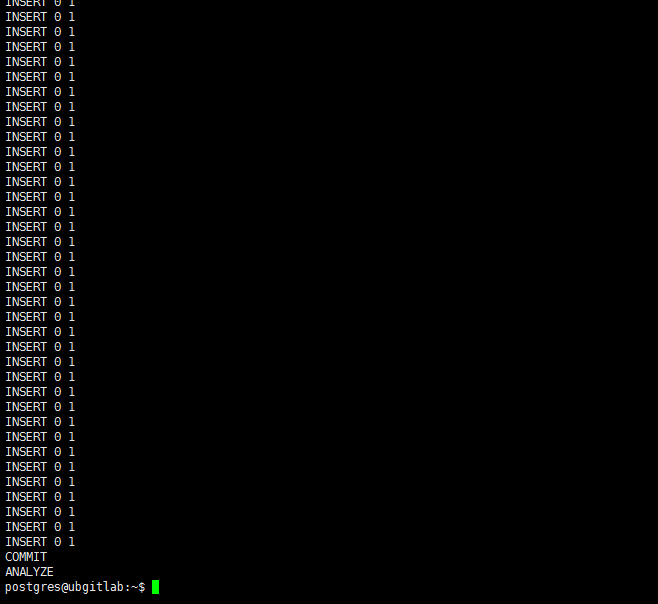
该命令在postgis数据库中创建了spatial_ref_sys表，用于存放空间投影信息。
|
|
下次再创建数据库，只要以这个模板就可以了，不必每次都执行这个脚本,-U指定用户名，默认就是postgres
psql my_spatial_db 连接到创建的空间数据库
select postgis_full_version();查询postgis的版本信息，包含用到的三个库信息
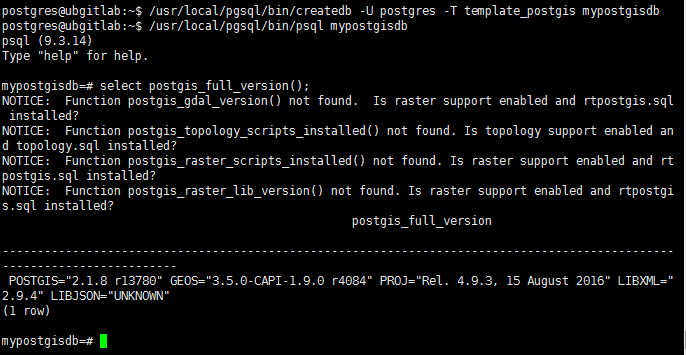
创建一张表
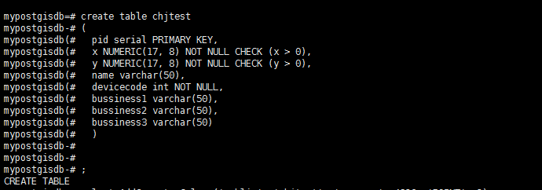
增加一列空间字段
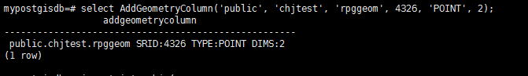
随意插入一列数据
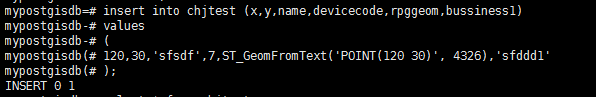
查看数据
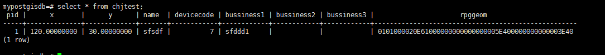
查看一些配置信息
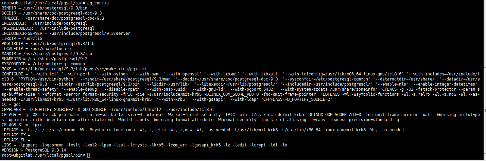
修改白名单
这时如果你打开web应用却发现连接不上PostgreSQL数据库
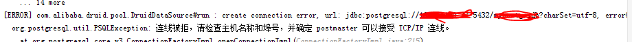
postgresql默认只开启了本地访问权限，如果有web应用程序不是本地的需要开启
vi /usr/local/pgsql/9.3/data/pg_hba.conf
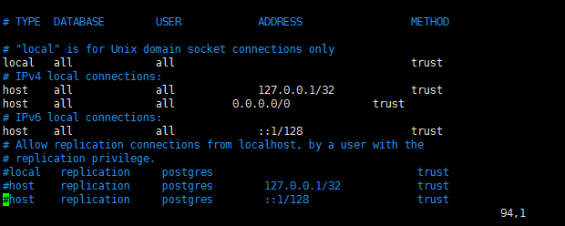
IPV4区域
如果你只想放开某个IPhost all all 10.10.21.62/32 trust
如果可以让任意IP都可连接
host all all 0.0.0.0/0 trust
IPV6区域就根据IPV6的来改
然后重启一下
切换到postgre用户
su - postgres
到这里还不够
打开vi /usr/local/pgsql/9.3/data/postgresql.conf
你会看到默认只监听了本地
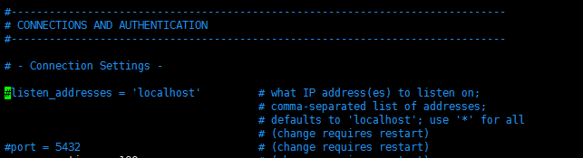
这时，你改成*
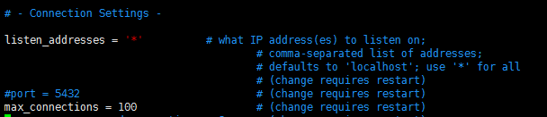
重启
/usr/local/pgsql/bin/pg_ctl -D /usr/local/pgsql/9.3/data/ -l /usr/local/pgsql/9.3/data/logfile restart
其他命令
|
|
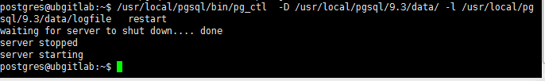
这时再开启web应用就可以连接上了。
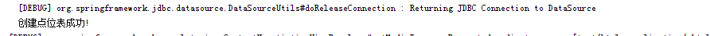
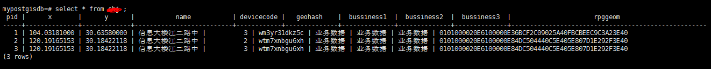
至此 ，从编译安装PostgreSQL到PostGIS到连接，创库，创空间模板，创空间库，应用连接数据库都可以了
(完)
参考
http://www.cnblogs.com/zhoulf/p/4040768.html
http://blog.csdn.net/dracotianlong/article/details/7907633
http://postgis.net/source/
https://trac.osgeo.org/postgis/wiki/UsersWikiInstall
http://postgis.net/install/
https://trac.osgeo.org/postgis/wiki/UsersWikiPostGIS21Ubuntu1404src